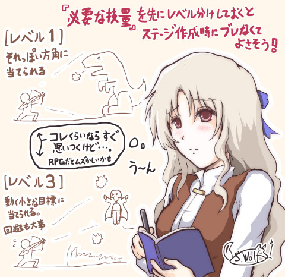

■2017-03-25 (土) 遊ぶ人に技量アップしてほしい！▼
今回は自分の「アクションゲーム」を作るときに考えている
「遊び手の技量アップを考慮したステージ作成」についてご紹介します。
というところから始まって、途中からRPGの技量アップの話をし始めています。
今回はちょっと長いです。
・アクション作り――最初に『技量のレベル分け』をしよう！
・この「技量順にステージを考える」方法、RPGでも使える？
・じゃあRPGでプレイが上手になってもらえる方法ってある？

【アクション作り――最初に『技量のレベル分け』をしよう！】
皆さんはアクションゲームを作るとなったら、どんな意図でステージを作るでしょうか。
「世界観やストーリーをドラマチックに展開できるステージ？」
いいですね、私はまだそこまでの配慮に自信がありません！
「最初はゆるゆるで、徐々に求められる精度が上がっていく感じ？」
はい、私もおおよそそうです。でも、その「精度」の部分をもう少しだけ細かく考えています。
私が「アクションゲームを作りたい！」と思ったとき、
そのゲームはだいたいの場合、変わった操作性のものです。
代表的なのは『モノリスフィア』と『プラネットハウル』で、
『モノリスフィア』はマウスを引っ張ってその反動で飛ぶ感じのゲーム、
『プラネットハウル』は変則操作の宇宙船を苦労して操るゲームとなっています。
そんな変な操作性のアクションゲームは
「ほとんどの人が初めてこの操作性に触れる」ことが容易に推測できたため、
「急に求められる技量が上がったりすると絶望的なことになるだろうな！」
と考えていました。
つまり、慎重に「要求技量」を上げていかないと、突然「壁」ができてしまう
だろうと考えました。
「いきなり難易度が跳ね上がりすぎて攻略できない場所」、
アクションゲームでたまにあります。
なので私はそういう事態をできるかぎり避けられるよう、
アクションゲームを作る際は基本的な挙動を楽しめるプロトタイプができた時点で、
最初に『要求技量のレベル分け』を行い、それを元にステージを作ることにしました。
たとえば、『モノリスフィア』ではおおよそ以下のような感じで、
プレイヤーさんへの『要求技量のレベル分け』を行っていました。
【モノリスフィア開発開始時に想定していた要求技量のレベル】 レベル1 時間をかけてもいいので「おおよその方向」に飛べるようになる レベル2 時間をかけてもいいので「狙った一点」に飛べるようになる レベル3 敵の攻撃をタイミングよく回避できるようになる レベル4 すばやく何度も「おおよその狙った方向」に飛び続けられる レベル5 あいまいな精度で移動してそこそこタイミングよく攻撃ボタンを押せる レベル6 高い精度で移動してタイミングよく攻撃ボタンを押せる レベル7 敵の激しい攻撃を回避しながら精度の高い移動をしつつ攻撃ボタンを押せる レベル8 すばやく何度も「精密な方向」に飛び続けられる |
私はまず最初にこれらのレベル分けを行った後、
ほぼこの要求技量の順番で技術を要求されるステージを作成したり、
あるいは最後の調整時に「ステージの登場順」を注意深く並び替えしたりしていました。
各技量のレベルに応じて、どんなステージを作ったか紹介していきます。
【レベル1 時間をかけてもいいので「おおよその方向」に飛べるようになる】
最初のステージ。敵もおらず、最も困難な課題でも
「細い道を移動する」くらいで、ダメージは受けない。
ただし挑戦したい意欲がある人向けに、
レベル4「素早くおおまかな操作」を求める課題も
ステージ内に置いていたりする。これはクリアしなくても先に進める。
【レベル2 時間をかけてもいいので「狙った一点」に飛べるようになる】
小型の蛇を倒すステージ。
同じルートを行き来する蛇に横から上手に当たることが求められる。
といっても、よほど隙だらけな行動をしない限り
蛇はこちらを積極的に攻撃しないのでゆっくり狙える。
（蛇は頭上に行くと上に飛び跳ねてくるが、
横から慎重にいって触れることで安全に倒せる）
【レベル3 敵の攻撃をタイミングよく回避できる】
ボス蛇を倒すステージ。
「敵の攻撃を誘発するいい位置にたどり着く」ための正確さに合わせて、
そこで敵の攻撃をタイミングよく回避できれば倒せる。回避方向はおおざっぱでよい。
【レベル4 すばやく何度も「おおよその狙った方向」に飛び続けられる】
レースで他のニワトリたちより早く先にゴールするステージ。
とにかくすばやい移動が求められ、一定以上コースをずれると速度が落ちて不利になる。
多少のミスや精度不足は許容されている、というか最下位でも先に進める。
【レベル5 あいまいな精度で移動してそこそこタイミングよく攻撃ボタンを押せる】
「移動しながら狙って右クリック」をして消火活動をするミッションや、
水バリアを張ったまま溶岩を抜ける場面や、固定目標に火の攻撃を行う場面。
それまで移動だけだったモノリスフィアにおいて、
「攻撃」という新しい概念に慣れる段階。
それらの本番として火や水の世界の「ボス戦」があり、
「敵が動くが、比較的大きいので狙いが甘くてもどこかに当たる」、
あるいは「相手が動くし攻撃もしてくるがヒットさせるまでの時間に多少の猶予がある」
といった状況の戦闘シーンが繰り広げられる。ボス戦辺りはレベル5と6の中間くらいかも。
【レベル6 高い精度で移動してタイミングよく攻撃ボタンを押せる】
草原の世界のボス戦や、それ以後の世界で炎の能力を使って敵を倒すシーン。
「ゆっくり来る攻撃や一定のリズムで動く敵」をかわしながら
「すばやい精度で敵本体に攻撃を当てること」が求められる。
そういったシーンで使う炎の攻撃は「正確な移動方向でないと当てることができず」、
「持続時間も短い」ので、「高い精度」と「タイミング」と
「ほどほどの回避力」の3つが同時に要求される。
【レベル7 敵の激しい攻撃を回避しながら精度の高い移動を行いつつ攻撃ボタンを押せる】
冥府の世界のボス戦や隠しボス戦など。激しい敵の攻撃をかいくぐりつつ、
敵の小さな弱点やすばやく動く小さな敵に高い精度で攻撃を当てなければならない。
すばやい移動と精度の両方が求められ、戦闘の最終段階にふさわしい忙しさになる。
【レベル8のステージ すばやく何度も「精密な方向」に飛び続けられる】
「（細い道で）15秒以内に壁に触れずに全ての黄色クリスタルを集める」など、
全くミスが許されない精密操作の課題。これはできない人もいると思ったので、
クリアしなくてもストーリーを進められるところにおまけミッションとして入れていた。
という感じでした。基本的には、
「より早く」「より精密に」「やることが多くなる」のが
順当な要求技能のレベルアップだと思います。
各レベルの要求技量の設定は、あくまで「『初めて見るステージ』のレベルが
この順番になるように並べる」という目的で使っており、
たとえばレベル1が終わっただけなのに、レベル2～4を飛ばして
いきなりレベル5が「クリアに必須」になるステージを出したりはしません。
でも、「前のレベルの課題が後の方にも出てくる」ことはあって、たとえば
技量がレベル5まで行っても、
レベル1や3の高難易度版のステージを間に挟んだりします。
これは「飽きさせない」目的で、
「前と似ているけれどより難しい課題」に挑んでもらう意図です。
そしてもし「技量のレベルを飛ばして課題を出す」場合は、
できる限り「無視しても進めることができるサブミッション」として用意します。
これを用意しておくのもたぶん重要で、そうすることで、
「順番通りに進めるのが退屈だと感じかけていた熟練者あるいは挑戦者の人」が
「あ、ゲームがうまい人や挑戦者にも配慮してくれてるな」と感じてくれると思うので、
そういった人達にも続けて遊んでもらえる確率が
上がるんじゃないかなと私は考えています。
RPGでも、「今すぐ攻略しなくてよい、現段階だと攻略が難しい課題」が
早い内にポンと置かれてると興奮しませんか？
それはたぶん、あなたが熟練者あるいは挑戦者の心を
お持ちだからではないかなと私は考えます。
どう工夫すれば無理矢理に突破できるか、それを考えるのは私も好きです。
【この「技量順にステージを考える」方法、RPGでも使える？】
この技量別にステージや課題を作っていくやり方は、
「RPG」などでもまったく同じ文法が使えると思います。
たとえばRPGの要求技量として、
「集中攻撃して危険な敵から1体ずつ減らせる」「敵を倒す効率的な順序を考えられる」
「補助魔法を使いこなせる」 「最小のコストで勝てる作戦が立てられる」
などの知識や技量を求められるように敵の出し方を工夫すれば、
似たような技能習得ができるかもしれません。
……が、今その考えに至ったとき、RPGのようなターン制バトルゲームで
「プレイが上手になったと感じた経験」が私にはあまりなく、
作る側である私としても、これまで遊び手にそういった訓練をさせることを
ほとんど意識していないことに気付きました。
「植物の敵には火炎属性が有効」などそういった「ゲームごとの知識」の面では
よく教えられましたが、「持ってる技を組み合わせて最適化をする」などの
「うまさ」の面で鍛えられた記憶があまりないのです。
たとえば「補助魔法は大人になってから」と知り合いに言われましたが、
まさに私もそうで、自分も年を取って複雑な計算ができるようになって、
ようやくまともに補助魔法を使うようになったのです。
（ただ、昔のゲームは効果説明があいまいだったり
説明がなかったりする場合も多かったので、
この件を議論するには時代の影響も考慮する必要がありそうです）
あなたはRPGを遊んでて「うまいこと補助魔法などを使えるようになったゲーム」を
思い出せるでしょうか？
「補助魔法を使わないと絶対死ぬ」ゲームもあると思いますが、
これ以外にも、あなたはいつ
「技をどう使えばもっともコストが安くダンジョン攻略できるか」
などを考えるようになったでしょうか？
こういうことを考えているうちに、私は
「RPGにおける最適な戦術を、果たしてゲーム内の教育だけで
身に付けてもらうことはできるのだろうか？」と考えるようになってきました。
もちろん、私が開発者の皆さまが作ってくださった工夫に全然気付かず、
自然と戦術を習得させられてきた可能性は十分にあると思います。
いいゲームほど、気付かないうちに自然と技術を習得させてしまいますからね。
ただ同時に、RPGの場合は以下のゲーム性になっているために
「自分の技量」の影響度があいまいになっているところも
あるのかなと感じるところもあります。
●勝てない理由が強化不足か戦術が甘いせいかの判断が付きづらい
→ 基本的にRPGはレベルアップや装備の更新をし続けることが求められるので、
ある段階で勝てないとき、「自分の戦術面での技量不足」に原因があるのか、
「そもそも強化不足でゲーム的にクリア不可能な状態なのか」の区別が
付かない場合があります。
要するに、「自分の戦術を改善するだけで勝てるようになるのかが分かりにくい」
という意味で、何が結果に影響したかがあいまいになっており、
RPGはアクションゲームよりも
「ゲームプレイが上手になるきっかけ」を得にくいのかもしれません。
そもそも日本のRPGは「戦術」と「蓄積（装備やレベル等）」の両面を足したのが
総合的な強さになるゲームなので、あいまいなのは当然なんですけれどもね。
アクションゲームはうまいやり方ができるようになるとステージを突破できたりして、
うまいプレイに対するご褒美が割と即座に分かりやすく出ますが、
RPGではテクニカルかつ効率的に戦っても反応が地味なケースも多い気がします。
それをどうにかする意図で、たまに戦闘ごとに評価をしてくれるRPGもあると思います。
個人的な希望としては、勝てたのが「自分の戦術でうまくやれたから」なのか、
「溜め込んだ力が想定より多かったから勝った」のかを教えてくれる
ゲームが好きですし、私もそういうゲームを作りたいと願っています。
ついでにプレイヤーさんのプレイ技量が上がってくれるとなおよしで、
初心者の人をゲーム中級者に引き上げられれば、
彼らが遊べるゲームはもっと増えるでしょう。
ちなみに『片道勇者』のようなローグライクRPGでは、自ら使おうとしない限りは
「溜め込んだリソース（倉庫の中身）」を使えないことが多いので、
プレイの結果のどの部分が「溜めたリソース」によるもので、
どの部分が「自分の技術」なのかが、
ほどほどに区別できるようになっている気がします。
こういう形にできると、より私好みに近付きます。
【じゃあRPGでプレイが上手になってもらえる方法ってある？】
RPGのプレイ技量を上げる方法には、どんなものがあるでしょうか。
自分の場合、どう上手になってきたかを思い出せない、というか
年齢にしたがって自然と身に付いたような感じもあって、
はっきり思い出せない状況です。
私が初めてまともに「補助魔法の使い方」を意識したのは
いつだったかなーと記憶をたどってみたところ、
ある変わったシステムのコンシューマRPGを遊んだときだったことを思い出しました。
そのゲームでは、
「レベルがストーリー進行に従ってのみ上がり、それ以外は一切成長しない」
というシステムだったのです。
そのゲームでは「ある時点でのプレイヤー側の強さ」には
どうがんばっても限度があるので、
ボスに勝てない理由があるとしたら確実に
「自分の戦術不足」だと知ることができました。
実質的にほとんどパズルゲームになっていたのかもしれませんが、
「自分のやり方に改善の余地がある」ことにさえ気付ければ改善は容易でした。
そういうことを考えると、RPGでの学習がうまくいってないのは、
「各要素を使ってもらうための圧力が弱い」、言い換えると
「ゲーム側からの強い動機を持たせてない」ケースが多いからかもしれません。
もっと言い換えると、「補助魔法を使わないとクリアできない難易度を
ぶつければいいんだね！」と過激なことになっちゃうんですけれどもね。
問題が一つあるとしたら、そこまで要求技量を強制すると、
今度はゲームを投げられてしまう可能性が高くなることです。
「補助魔法を使ってようやく勝機が見えるゲーム」も
とあるゲーム会社さんのRPGには多かったりしますが、
一方で挫折する人を減らしたい気持ちもあるので、
ゴリ押しの余地は残したい気がします。
ひどく優柔不断に思われるかもしれませんが、それが私のRPG開発スタイルです。
そんなことを私が考えているとき、プレイヤーさんに
補助魔法の使い所を意識してもらうにあたって、
いいほのめかし方があるとコメントをいただきました。
その一例が、昔のRPG『ドラゴンクエスト3』に登場した
「じごくのハサミ」というカニ型の敵です。
＜敵に自分たちと同じ技を使わせるテクニック＞
ドラゴンクエスト3の「じごくのハサミ」は大量に出てきて、
敵全員を硬くする防御アップ魔法「スクルト」を使ってくる敵です。
この敵、戦闘開始時は打撃でも（たしか）少しダメージが通るのですが、
元の高い防御力に補助魔法「スクルト」重ねがけの効果が合わさると、
なんとほぼ全く物理攻撃のダメージが通らなくなってしまうのです！
この体験から私も「スクルト強いな！ いつか自分も使ってやる！」と感じさせられ、
補助魔法の使い方がとても印象に残った敵だったので、
いま考えると、このやり方はすごくいいほのめかし方だったように思います。
敵が 『自分たちが使うのと同じ名前の魔法』 を効果的に使ってプレイヤーを困らせる
この方法は、「いつかあの魔法を覚えて自分も同じ戦法で有利に戦ってやる！」
と感じさせてくれる、とてもいい手段だと思います。
特にこれ、「うっかり敵専用の技を作ってしまわない」
のが重要なコツの一つかもしれません。
容量に余裕がある今の時代なら、
カニが使う防御アップ技をうっかり「硬化」なんて専用技に
したくなるところを、あえて
「主人公が覚えうる魔法と同じ『スクルト』」にするのです。
遊んでいるときは全然意識していなかったことですが、
こうやって振り返ってみると、うまいやり方が使われていたんだなあと感心します。
私のRPGは普段、そこまでいじわるな敵キャラが出てこないらしいので
歯ごたえがないと言われがちなのですが、
これからはプレイヤーさんを困らせる敵を出すついでに、
こういった技の使い方のほのめかし方も混ぜていきたいなと考えています。
そしてまた、私の気付いてないところでこうやって
たくさん教えられてきたのかもしれません。
そう思うと、己の未熟さを恥じるばかりです。
【補足 最終的にゴリ押しできてもいい】
この話の主題と矛盾するように思われるかもしれませんが、
私の作ったゲームが最終的に「うまい戦い方を覚えなくてもゴリ押しでクリアできる」
というプレイができたとしても、それはそれで全く問題ないと私は考えています。
子供時代の私のように、どうやってもうまい戦い方ができない人は必ず出るでしょうし、
そういう人達にも楽しんでもらえるよう
リソース（『片道勇者』なら「強い武器」など）をためて
クリアできるようになっている分には、それはそれですばらしいことだと思っています。
「技能の違う様々な人が、人それぞれにできることをしてクリアへたどり着ける」
というのは、ゲームのあり方として素敵なことだと思っていますから。
もちろん、「開発側として一番楽しんでもらいたいやり方」で挑むほど、
お得感や達成感が味わえるように作るのは大前提です。
それに加え、ゲーム開発者としては「ゲームがより上手になれるきっかけ」や、
「プレイヤー自身が気付いたと感じられるヒントの出し方」があるなら
どんどん採用したいなと、次回作を控えた今になってますますそう思っています。
これからも「新しいルールのゲーム」を次々に作っていくにあたって、
その技量はきっとどれだけあっても足らないでしょうからね。
以上、プレイヤーさんの技量をレベルアップしてもらうきっかけを作るのは難しいなあ、
という話題でしたが、いかがだったでしょうか。
この記事で挙げた以外にも、「こういう形で俺は補助魔法の使い方を学べた！」とか、
「敵の各個撃破の重要性を学んだのはこのゲーム（のあの部分）だったなあ」
みたいな話があれば、情報をお寄せくださると幸いです。
ぜひ今後の開発の参考にさせていただきます。
それと、ビックリするかもしれませんが、私が初めてRPGを遊んだとき、戦闘では
「仲間キャラクターそれぞれで別々の敵を攻撃する」という遊び方をしていました。
つまり各個撃破を狙う「集中攻撃」を全然しなかったんですね。
なぜかというと、当時の私は「各グループの敵を一人以上で相手しないと、
囲まれて不利になったりするんじゃないか」と考えていたからです。
近接武器でのリアルな戦闘風景をイメージしたとき、
「他の敵からの攻撃を受けるのを無視してでも、味方全員で敵一人に集中攻撃する」
ってのはなんだかおかしな気がしたんですよ。
実はそのゲームではそんなことを意識する必要など全くなかったのですが、
初めてゲームを遊ぶ人ほど、まず「ゲームルールに応じた効率化をすべき」という
ルールを学ぶまでが遠いのではないかとも感じます。
どこまで初心者の人に配慮するかは開発者さま次第ですが、
「安心して他の人にもおすすめできるゲーム」を目指すならば、
そんな昔の私にも上達してもらえる気配りをしたゲームを作りたいなと考えています。
他にもし何か語って欲しいことや、開発において聞いてみたいこだわり部分などが
ございましたら、ぜひ拍手コメントからどうぞ！
 | ← 今回のような記事を 1冊の本にまとめたゲーム開発本、 『ゲーム開発者の地図』、 Kindleで好評発売中です！ |
2017-03-25 (土)  カテゴリ: 開発日誌
カテゴリ: 開発日誌
 カテゴリ: 開発日誌
カテゴリ: 開発日誌